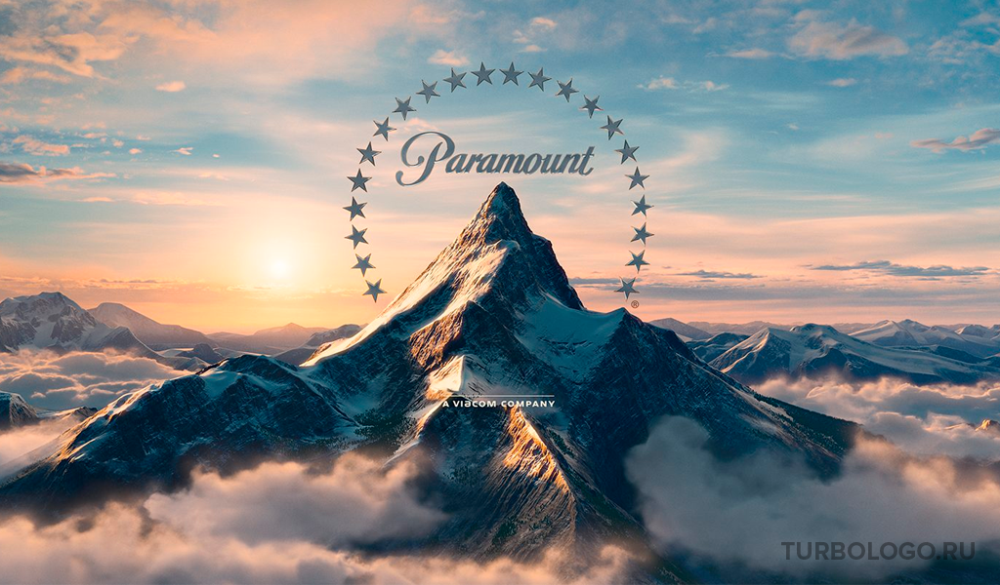
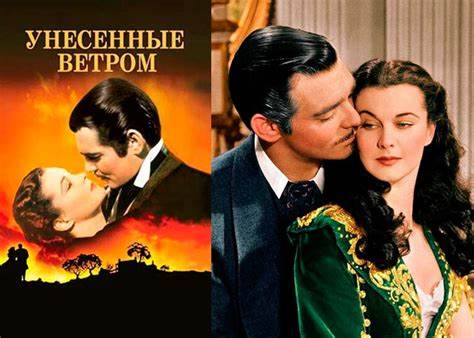
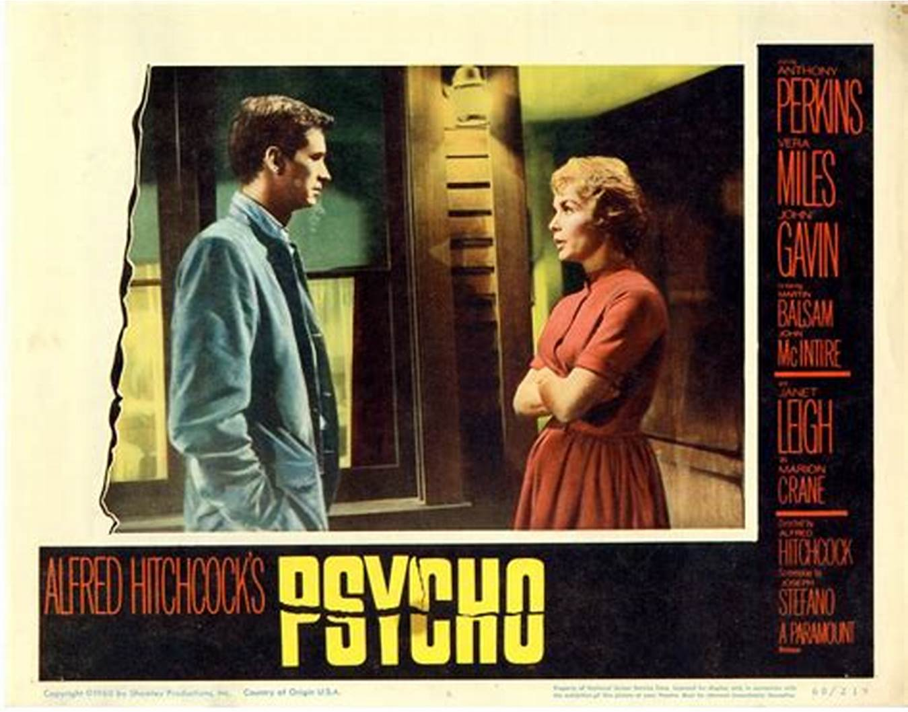
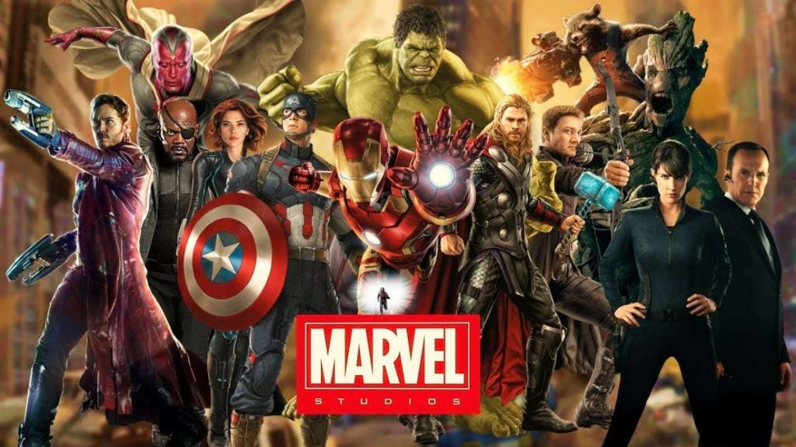

История Голливуда
Голливуд — это символ американского кинематографа и одна из самых влиятельных индустрий в мире. Здесь рождались легенды кино, создавались культовые фильмы и формировались новые стандарты развлечений.
1900-е – 1920-е: Рождение Голливуда
В начале XX века Голливуд стал центром кинопроизводства благодаря своему географическому положению и благоприятному климату. Первые студии, такие как Paramount Pictures и Warner Bros., начали свою деятельность в этот период.
1930-е – 1940-е: Эпоха золотого века
Это время считается золотым веком Голливуда. Появились первые цветные фильмы, а звездная система сделала актеров настоящими иконами. Классические фильмы, такие как "Унесенные ветром" и "Касабланка", были созданы именно в этот период.
1950-е – 1960-е: Конец старой Голливудской системы
С приходом телевидения популярность кинотеатров начала падать. Однако это время также ознаменовалось появлением новых жанров, таких как научная фантастика и мюзиклы. Выдающиеся фильмы этого периода включают "Психо" Альфреда Хичкока и "Звуки музыки".
1970-е – 1980-е: Новая волна и блокбастеры
В 1970-х годах режиссеры, такие как Мартин Скорсезе, Фрэнсис Форд Коппола и Стивен Спилберг, привнесли свежесть в кинематограф. Это также эпоха появления первых блокбастеров, таких как "Челюсти" и "Звездные войны".
1990-е – 2000-е: Цифровая революция
Внедрение цифровых технологий изменило киноиндустрию. Фильмы стали более зрелищными благодаря компьютерной графике (CGI). Успех таких фильмов, как "Матрица" и "Аватар", подтвердил значимость технологий в современном кино.
2010-е – настоящее время: Эра стриминга
С развитием сервисов потокового вещания, таких как Netflix и Disney+, Голливуд переживает новую трансформацию. В то же время супергеройские фильмы и франшизы Marvel доминируют в кинопрокате.
